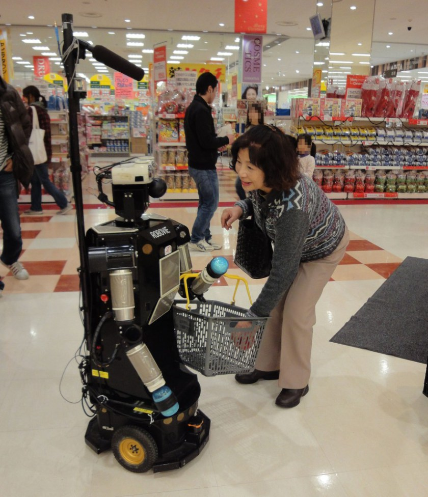

Robotics Internship in Japan
- Date:2009
- Category:Robotics Research
- Tags:Internship
TOSHIBA : Human Robot Verbal Interaction
As a internship student at TOSHIBA R&D Center in Japan, I wrote a program that draws a graph from real-timed inputs(Interest rate of the user) from APRIPOKO, a prototype robot for Human-Robot Interaction research.


The robot calculates “Interest Rate” with the size of eyeball or movement of the user with TOSHIBA’s own algorithm. My work was to visualize such data in real-time and design appropriate movements of APRIPOKO with sustained “Interest Rate” of the user.
ATR : Human Robot nonVerbal Interaction
The second research in Japan was conducted in IRC Lab(Intelligent Robotics and Communication Laboratories), ATR(Advanced Telecommunications Research Institute located in Kyoto, Japan.
I took a part in the base research of contriving a listener robot that deepens the talk with human with proper use of verbal cues in the right time. In advance of writing the program for a communication robot, my work was to figure out the basic information(Appropriate response time of verbal cues, topic of the talk etc.) with numbers of basic interviews and research with users.